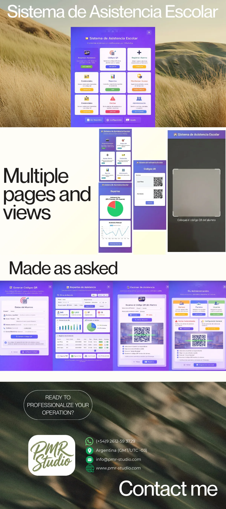
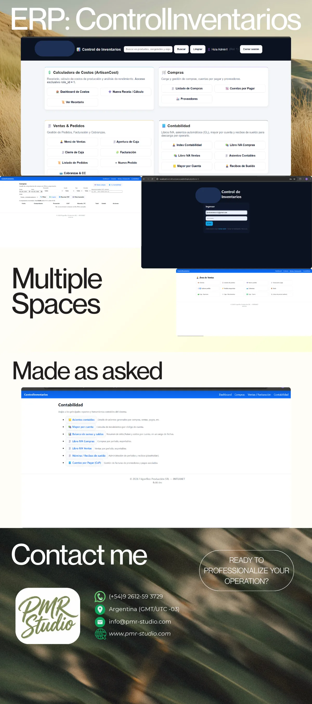
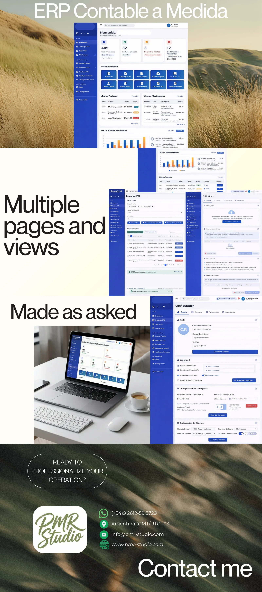

Single source of truth (internal control)
One place to see what’s happening: structured data, clear ownership, and less “Where’s the latest version?” noise.
I design internal tools, dashboards, and workflows so your operation runs on reliable data—without the spreadsheet/WhatsApp chaos.
Web development (PHP/JS/MySQL) + real operations & quality control experience. Clean deliverables, minimal friction, measurable clarity.
Stack: PHP · MySQL · JavaScript · Google Workspace · APIs · n8n/Zapier · Automation
Systems that reduce manual work, improve control, and make reporting faster.
One place to see what’s happening: structured data, clear ownership, and less “Where’s the latest version?” noise.
Replace manual logs with simple digital records (forms/tables) and exports that support traceability and operational reporting.
Trackers and dashboards aligned to real work: KPIs, status, due dates, follow-ups, and weekly cadence so things don’t drift.
Structure-first work. We define the data, the workflow, and the smallest useful version—then iterate.
If your operation runs on scattered sheets, chats, and memory, we start by mapping reality and turning it into a simple system people can actually use.
Current tools, bottlenecks, data sources, ownership, and reporting needs.
Data structure + workflows + “definition of done” + minimal documentation.
MVP system shipped fast, then improvements based on usage and feedback.
Databases + control panels to centralize information, reduce mistakes, and make KPIs visible.
Convert paper/manual logs into reliable digital records for operations and quality control reporting.
Reduce manual entry by connecting tools (email, Drive, forms, databases) via APIs and automation.
SOPs, checklists, roles, and cadence so the system stays alive after delivery.
Natural business tone for landing pages, sales messaging, and documentation—consistent across markets.
Clean one-pagers, decks, and templates to communicate systems, results, and processes.
If you tell me your tools + timeline + biggest bottleneck, I’ll propose the smallest useful version to ship first.
Simple hourly rates for execution. For larger builds/migrations, I can quote project-based.
Targeted help to unblock something quickly (cleanup, fixes, short builds).
Ongoing operations + systems support for continuity and speed.
Deeper system-building and continuous improvement with priority response.
Share scope + tools + timeline and I’ll propose the simplest starting point.
A compact overview plus practical scenarios: digitization, internal tooling, and trilingual localization.
Overview of services, workflows, deliverables, and example scenarios.
Turn manual logs into structured records that support fast reporting and operational control.
A single view of what matters: status, KPIs, owners, and next actions.
Localization for landing pages, sales messaging, and internal documentation—consistent business tone.

UI snapshot: catalog + admin dashboard + reports + QR generator + scanner.

Multi-module ERP UI snapshot for inventory & operations control.

Accounting workflows UI snapshot: invoices/CFDI, uploads, config, reporting.
Quick answers. If you share your context, I’ll propose a minimal plan.
Tell me your goal + current tools + timeline. I’ll reply with a simple plan and the best starting option.
Email: info@pmr-studio.com
WhatsApp: +54 9 2612 59 3729
Location: Mendoza, Argentina (GMT/UTC -03)
Payments: PayPal · Skrill · Crypto (USDT, USDC, DAI)
Languages: Spanish (Native) · English (C2) · Italian (B2)